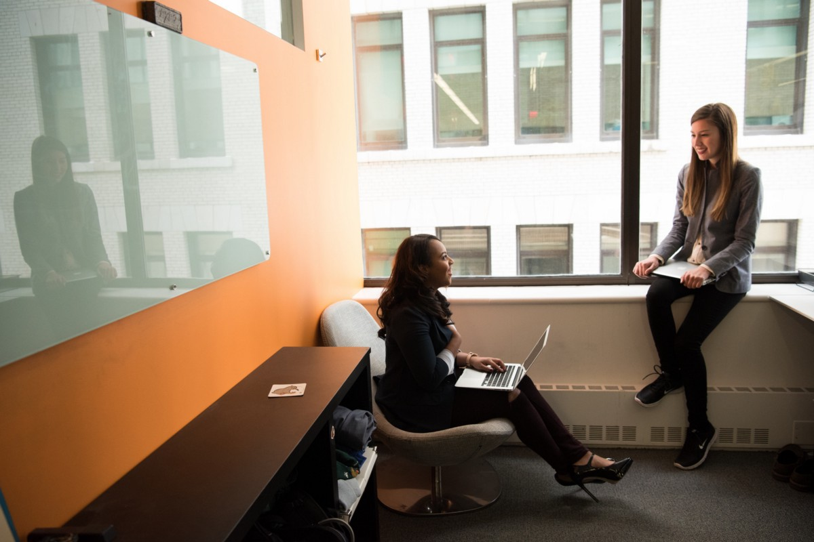

| Qwerty Kumar
36 mins ago. |
An Open Letter to Managers of Women
Owen Smith has become the willing dupe of the Labour right
We need to talk about her. You probably know who. That analyst, designer, writer, engineer who has been at the organization for just a year or two and is already doing the work of someone several levels above her current pay band. Or maybe she’s not even on your radar, because she’s the dependable one who always delivers on-time and under budget, without any drama.

34
17